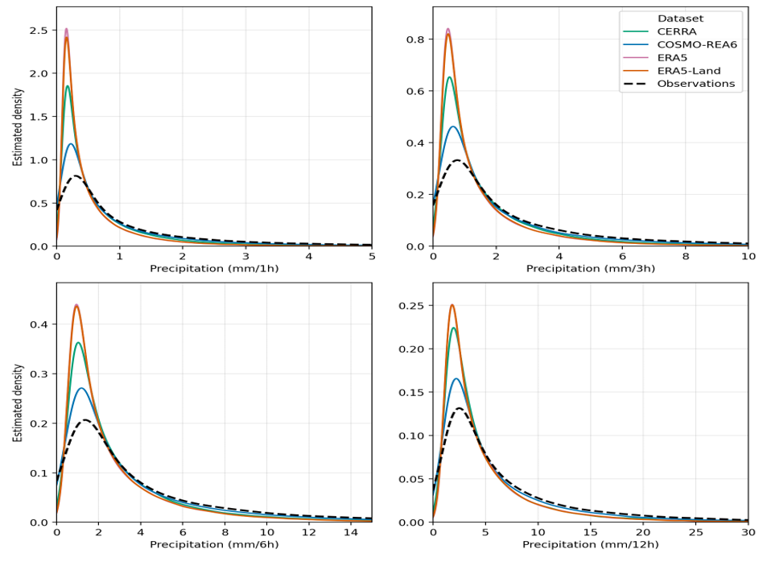
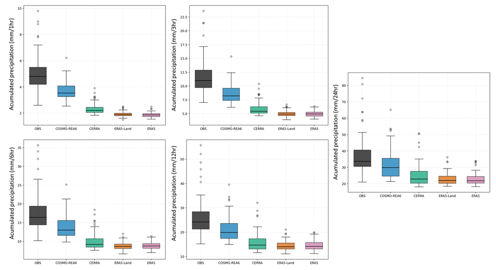
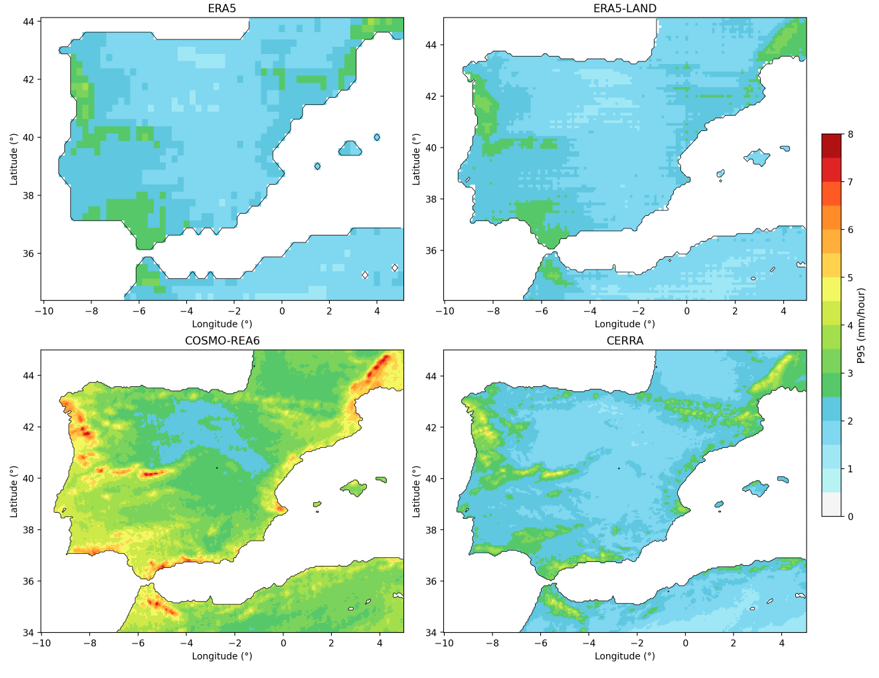
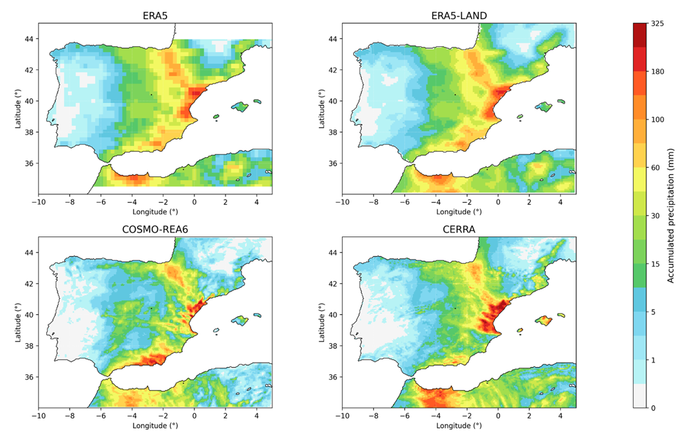
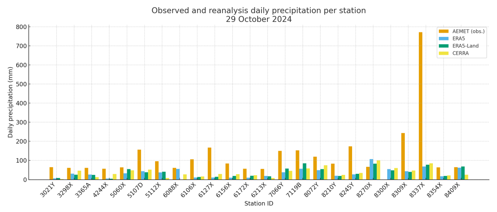
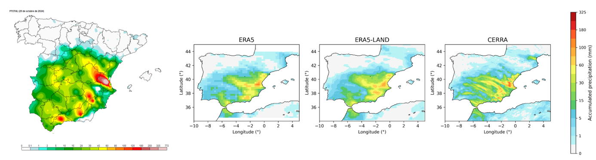

RESULTADOS
Al estudiar las curvas de distribución de la precipitación horaria se observa que todos los reanálisis sobrestiman los valores, particularmente ERA5 y ERA5-Land. COSMO-REA6 se ajusta mejor a la curva de distribución. Aunque existen algunas discrepancias entre reanálisis y observaciones, estas disminuyen al incrementarse la acumulación, sobre todo para COSMO-REA6 y CERRA.

En cuanto al percentil 95 (valores extremos de precipitación), COSMO-REA6 es el reanálisis que menos subestima la precipitación horaria. ERA5 y ERA5-Land subestiman más los valores extremos (alrededor del 38%). CERRA también subestima valores de acumulación, pero no tanto como ERA5 y ERA5-Land.

En la región mediterránea, los valores más altos se encuentran en Cataluña, Valencia y la costa mediterránea andaluza. Entre los reanálisis también encontramos diferencias significativas en los valores más extremos de precipitación. Por ejemplo, ERA5 y ERA5-Land no observan los altores valores de percentil 95 encontrados en áreas de Valencia, mientras que COSMO-REA6 muestra valores más cercanos a los datos observacionales. Sin embargo, todos concuerdan en que los valores más altos de percentiles 95 se encuentran en Cataluña y la costa mediterránea de Andalucía.

Para ilustrar estos resultados se han seleccionado dos episodios de precipitación torrencial ocurridos en la costa mediterránea de la península ibérica.
Entre el 20 y el 25 de octubre del 2000, un episodio de precipitación extrema afectó a amplias áreas de la costa mediterránea española, particularmente la Comunidad Valenciana. El reanálisis muestra diferencias significativa en la intensidad y la extensión de la lluvia durante este periodo, siendo CERRA el que muestra la mayor intensidad. Le sigue COSMO-REA6, donde la precipitación acumulada es mayor que en Andalucía. ERA5 y ERA5-Land subestiman la precipitación pero modelan la máxima acumulación en áreas de la Comunidad Valenciana.

Por otro lado, entre el 28 de octubre y el 2 de noviembre de 2024 (especialmente el 29 de octubre), se produjo un episodio histórico de precipitación torrencial que afectó a toda la región mediterránea española. Al comparar los datos diarios observacionales del 29 de octubre de 2025 de las estaciones de AEMET con los valores de los productos de reanálisis se observa una subestimación significativa por parte del reanálisis, particularmente de ERA5 y ERA5-Land. CERRA muestra los resultados más cercanos a las observaciones.

La precipitación más intensa se registró en áreas cercana a Valencia (700 mm en Turís). Todos los reanálisis subestiman la precipitación. CERRA presenta la distribución espacial de la lluvia más cercana a los datos observacionales, mientras que ERA5 y ERA5-Land no reproducen adecuadamente aquella registrada en la península ibérica central.
